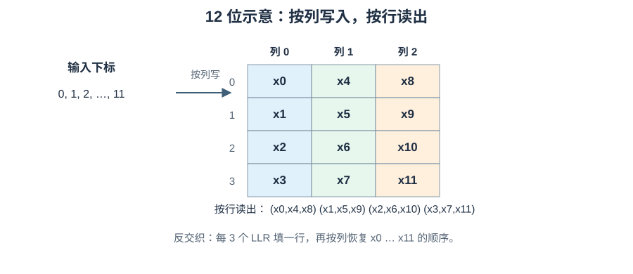

从零到实现：DVB-S2 Demapper 与位交织¶
发送端先把纠错码字位重排，再按星座标签将每组比特映射到一个复数点；接收端看到有噪声的点，须估计每个编码位更可能为 0 还是 1，并把软值放回 LDPC 期望的原始列顺序。两个动作分别叫解映射（Demapper）和解交织（Deinterleaver）。它们常连续出现，但一个处理概率证据，一个处理位置，不可互换。
发送：FECFRAME 编码位 → 位交织 → 每 m 位组成标签 → 星座 Mapper → 信道
接收：复数采样 y → Demapper：按标签位置给 m 个 LLR → 解交织
→ 原 FECFRAME 位顺序的 LLR → LDPC
本文先构造接收概率模型，再推 Demapper 公式；最后从一般置换推到 ETSI EN 302 307-1 第 5.3.3 节 的块交织。数值例子会明确哪些是教学模型，哪些是标准规定。
1. 从 \(y=s+n\) 看“接收的是什么”¶
一个数字调制符号可取若干理想状态。接收机在正确的采样时刻，把其同相和正交分量记为两个实数 \((I,Q)\)，合写成复数 \(s=I+jQ\)；\(j^2=-1\)，只是二维坐标的记号。星座图的横轴是 I、纵轴是 Q；星座是所有允许发送的理想点的集合 \(\mathcal S\)。例如 QPSK 有 4 个点、每数据符号标 2 个编码位；8PSK、16APSK、32APSK 分别有 8、16、32 点，每符号标 3、4、5 位。PSK 点主要按相位分开，APSK 还分不同半径的环，具体标签与环半径必须按对应 MODCOD 的标准图表，不可把通用示意图当数值规范。
令 \(s\) 为实际发送的理想点，\(n\) 为信道与接收处理后落在这一采样上的扰动，\(y\) 为接收样本。最基本模型是
这只是采样点处的加性噪声模型。真实接收机在此之前还须载波/定时同步、匹配滤波、幅度和相位校正；若存在相位噪声、非线性或残余频偏，简单的 \(y=s+n\) 未必充分。接收端不知道 \(s\)，只知道 \(y\) 和候选星座点；Demapper 必须根据候选与观测之间的关系产生证据。
2. 在似然之前：随机变量、密度和高斯¶
2.1 概率与概率密度不是一个数¶
掷骰子的结果只有离散的六个值，可直接给“恰好出现 3”赋概率。噪声电压却可在连续范围取值，不能给每个无限精确的实数分配普通的点概率；在连续模型下，恰好取单点的概率为 0。对连续随机变量 \(N\)，使用概率密度 \(f_N(u)\) 描述各处“概率的浓淡”。区间 \([a,b]\) 的概率是密度曲线在区间下方的面积，数学上写作 \(P(a\le N\le b)=\int_a^b f_N(u)\,du\)。\(\int\) 是把无数个很窄区间的“密度 × 宽度”累加；密度值本身不是概率，甚至可以大于 1，只要整体面积为 1。
随机变量是实验结果所对应的数，例如 I 轴噪声 \(N_I\)。均值是长期平均值；方差是与均值的偏差平方的长期平均，标准差 \(\sigma\) 是方差的平方根。本节用均值 0、方差 \(\sigma^2\) 的高斯（正态）噪声：
\(\pi\) 是圆周率，\(\exp(z)=e^z\) 且 \(e\approx2.718\)；负指数让远离 0 的大噪声较罕见。分母保证整条曲线面积为 1。方差越大，曲线越宽。AWGN 指加性白高斯噪声；“白”描述所考虑带宽内的谱近似平坦，不等于每个实际接收误差都严格独立高斯。
2.2 从一维高斯推到 I/Q 条件密度¶
假设 \(n=n_I+jn_Q\)，两个实坐标独立，各服从均值 0、方差 \(\sigma^2\) 的高斯。独立意味着知道 \(n_I\) 不改变 \(n_Q\) 的分布，二维联合密度可把两项一维密度相乘。若已假定发出候选点 \(s=s_I+js_Q\)，则观测 \(y=y_I+jy_Q\) 对应噪声 \(n_I=y_I-s_I\)、\(n_Q=y_Q-s_Q\)。相乘得到
左边是“给定发送点 \(s\) 时，连续观测 \(y\) 的条件概率密度”，不是“收到精确值 \(y\) 的概率”，更不是“发了 \(s\) 的后验概率”。把 \(y\) 固定、比较不同 \(s\) 时，同一个表达式称为候选 \(s\) 的似然（likelihood）；这是使用密度给候选打分的视角。区间/区域概率仍需积分。
复平面的勾股距离满足 \(|y-s|^2=(y_I-s_I)^2+(y_Q-s_Q)^2\)；这个值是两个坐标误差的平方和，单位是符号幅度单位的平方。定义本文离散符号采样归一化下的 \(N_0=E[|n|^2]=2\sigma^2\)，其中 \(E\) 表示平均值；于是同一密度可写成
若其他文献用连续时间单/双边噪声谱密度、不同匹配滤波器增益或不同星座归一化，\(N_0\) 与每轴方差的关系要重新核对，不能把本式的数值因子不加说明地搬过去。固定 \(N_0\) 时，公共前因子对所有候选相同，比较似然只需比较距离平方：越近越合理。但若候选先验不同，最可能发送的点还需结合先验；“最近点”只在等先验、该 AWGN 模型等条件下等价于最大后验判决。
3. 从符号似然走到每个比特的 LLR¶
3.1 把一个比特的候选点分成两组¶
Mapper 将每个 \(m\) 位标签映射到一个点。对标签中的第 \(k\) 位，设 \(\mathcal S_{k,0}\) 为该位等于 0 的全部星座点，\(\mathcal S_{k,1}\) 为该位等于 1 的点。收到 \(y\) 后，符号似然 \(p(y\mid s)\) 是每个候选点的条件密度。比特条件似然密度 \(p(y\mid b_k=0)\) 则要对“所有该位为 0 的候选点”求平均或按条件先验加权：
\(\sum\) 表示逐项相加；\(P(s\mid b_k=0)\) 是已知该位为 0 时该候选点的概率。等概星座且标签均匀时，每组有 \(2^{m-1}\) 点，权重均为 \(1/2^{m-1}\)。这是多个互斥发送候选的混合密度，不是单个点的密度，也不是比特后验概率。
现在用条件概率反推发送位。设 \(P(b_k=0\mid y)\) 为观测后该位为 0 的后验概率，\(P(b_k=1\mid y)\) 同理；它们的比值叫后验赔率。贝叶斯关系说明“后验赔率 = 条件似然密度比 × 先验赔率”：
自然对数 \(\ln\) 是指数函数 \(\exp\) 的反函数，把乘法变加法；定义“正数支持 0”的对数似然比（Log-Likelihood Ratio，LLR）为
这是一种无量纲的对数赔率，不是概率密度或概率。\(L>0\) 偏向 0，\(L<0\) 偏向 1，\(|L|\) 越大两种候选越不均衡。若先验比特等概率、星座点也等概率，先验赔率和组内相同权重约掉，代入二维高斯密度后得到精确软解映射式：
若码字位的先验不等概率，或迭代 Demapper 收到译码器反馈，须在每项中加入对应先验权重并避免重复计算；不能依然直接用这个等先验简式。实现常以 log-sum-exp 计算：先减去该组最大指数，避免小概率指数下溢，再把偏移加回。这不会改变数学结果。
3.2 Max-Log 从何而来，代价是什么¶
若某组里一个候选点比其余点更近，指数和可近似由这一项主导。因为 \(\ln\sum_i e^{a_i}\approx\max_i a_i\)，上式可化为
它比较两组各自的最近点，免去指数与对数，但不是“先找全星座唯一最近点，再给所有比特相同的置信度”。若一个组里有多个贡献相近的点，Max-Log 忽略了它们的总权重，LLR 幅值会偏离精确值。例如仅用于展示近似误差的四个候选平方距离：0 组为 \(0.1,0.3\)，1 组为 \(0.2,2.0\)，\(N_0=0.5\)。精确值为 \(\ln[(e^{-0.2}+e^{-0.6})/(e^{-0.4}+e^{-4})]\approx0.686\)；Max-Log 只取两组最小值，得到 \((0.2-0.1)/0.5=0.2\)。这些距离不是某个标准星座的坐标表，只说明忽略第二近点可能明显改变软值。
3.3 完整 QPSK 数值轨迹¶
取等能量 QPSK 点 \(s=(\pm a)\pm j a\)，\(a=1/\sqrt2\approx0.7071\)。用第一个标签位表示 I 的正负、第二位表示 Q 的正负：00 是右上、01 右下、10 左上、11 左下；这与 DVB-S2 QPSK 标记图一致。若 \(y=0.8+j0.2\)、\(N_0=0.5\)（每实维方差 \(0.25\)），逐点平方距离为：
| 标签 | \(s\) | \(|y-s|^2\)（约） |
| --- | --- | ---: |
| 00 | \(+a+ja\) | \(0.266\) |
| 01 | \(+a-ja\) | \(0.831\) |
| 10 | \(-a+ja\) | \(2.529\) |
| 11 | \(-a-ja\) | \(3.094\) |
最近点硬判决为 00。但两个比特的可靠程度不同；这张 QPSK 表可让另一轴的共同因子在分子/分母中约掉，得到精确 LLR：
来源是比较正负 I 点的高斯指数差：\([(I+a)^2-(I-a)^2]/N_0=4aI/N_0\)，Q 轴同理。两个值都支持 0，但第二位明显不那么可靠；由赔率还可算出 \(P(b_I=0\mid y)\approx0.989\)、\(P(b_Q=0\mid y)\approx0.756\)。此特殊 QPSK 情况下 Max-Log 与精确式相同；高阶 8PSK/APSK 一般没有这样的 I/Q 分离，须按实际标签枚举候选集。APSK 的内外环距离与映射会随模式变化，不能用“一张圈图＋统一公式系数”代替标准星座表。
4. 为什么还要交织：顺序影响每位的可靠性¶
同一个高阶调制符号的不同标签位，可能有不同的几何决策边界和可靠程度。位交织（bit interleaving）不是改变比特值，而是把 LDPC 码字位重新分配到这些标签位置，使码的结构与调制位通道更合适；LDPC 译码器仍要求按原码字列顺序收到 LLR，所以接收侧必须应用逆置换。它不会添加纠错冗余，也不会让噪声凭空消失。
一个置换（permutation）是把 \(N\) 个位置一一重新排列，每个原位置恰好出现一次。若输出位置 \(j\) 取原位置 \(\pi(j)\)，写作 \(z[j]=b[\pi(j)]\)；逆置换要把值放回原位，即 \(b[\pi(j)]=z[j]\)。因此同一个地址关系在发送端是 gather（按原地址取），在接收端可写成 scatter（向原地址放）；把两边都写成 \(b[j]=z[\pi(j)]\) 通常会错，除非该置换恰好自身为逆。
4.1 12 个位置完整手算¶
这里只用数字做位置标签，不是实际比特值。原顺序 0 1 2 3 4 5 6 7 8 9 10 11，按列写入一个 4 行、3 列矩阵：
列 0 列 1 列 2
行 0 0 4 8
行 1 1 5 9
行 2 2 6 10
行 3 3 7 11
按行、从左到右读出：0 4 8 1 5 9 2 6 10 3 7 11。逆向时把这串每连续 3 个值填回一行，再按列读出，就回到 0 1 2 3 4 5 6 7 8 9 10 11。若这些值是 LLR 而非比特，逆向同样只移动数值的位置，不改变符号、幅度或量化格式。

4.2 从矩阵读写推导索引¶
令 \(N=RC\)，\(R\) 为行数、\(C\) 为列数。原输入 \(b[k]\)，按列写入时 \(k=cR+r\)，其中 \(0\le r<R,0\le c<C\)。若按正常列顺序读一行，输出索引 \(j=rC+c\)，所以
逆向直接把右端原地址当目标即可：\(b[cR+r]=z[rC+c]\)。从任意原索引 \(k\) 求其行列：\(c=\lfloor k/R\rfloor\)，\(r=k\bmod R\)，故它在输出的位置为 \(j=(k\bmod R)C+\lfloor k/R\rfloor\)。\(\lfloor\ \rfloor\) 是向下取整，\(\bmod\) 是整数除法余数；可代入 12 位例子的 \(k=6\)：\(c=1,r=2\)，输出位置 \(j=2\cdot3+1=7\)，确实是读出序列中的第 7 个零基位置。
为兼容改变读取列次序的模式，令 order[q] 表示输出行中第 \(q\) 个标签位来自原矩阵哪一列。则统一公式是
order 必须本身是 \(0,\ldots,C-1\) 的置换。普通情况为 [0,1,...,C-1]。DVB-S2 的 8PSK 码率 3/5 是特殊读序：首个 BBHEADER 比特在一行三个输出位置中排第三，不能走默认读序；按 标准图 8的三列反向读序可写作零基 [2,1,0]。把这一顺序作为模式表配置，不要在解交织后再临时“交换一个 bit”来补丁式修复。
4.3 DVB-S2 的真实矩阵尺寸¶
| 调制 | 每数据符号编码位数 \(C\) | 正常帧 \(N=64800\) 的行数 \(R\) | 短帧 \(N=16200\) 的行数 \(R\) |
|---|---|---|---|
| 8PSK | 3 | 21600 | 5400 |
| 16APSK | 4 | 16200 | 4050 |
| 32APSK | 5 | 12960 | 3240 |
例如正常 8PSK：按列写 64800 位到 \(21600\times3\) 矩阵，再按行读，每 3 个输出位就是一个数据符号的标签。短帧同理，但行数换成 5400。QPSK 不使用本条 DVB-S2 位交织规则，应按 FECFRAME 的既定顺序将两位组成符号；接收端也不要凭“任何调制都应解交织”的通用印象额外重排。8PSK 3/5 的特殊 order 是码率与调制的联合选择，不能只检查调制名。
5. 可实现的 C++ 与缓冲区组织¶
以下 C++20 std::span 示例只实现已给定行数和列次序的置换内核；调用端仍需从 MODCOD/帧型选择标准参数、准备足够长的缓冲区。T 可为 bit、float LLR 或定点 LLR；不要让输入输出 span 指向重叠区域。
#include <cstddef>
#include <span>
#include <stdexcept>
template <class T>
void interleave(std::span<const T> input, std::span<T> output,
std::size_t rows, std::span<const unsigned> order) {
const std::size_t cols = order.size();
if (cols == 0 || input.size() != rows * cols || output.size() != input.size())
throw std::invalid_argument("interleaver dimensions");
for (std::size_t r = 0; r < rows; ++r)
for (std::size_t q = 0; q < cols; ++q)
output[r * cols + q] = input[order[q] * rows + r];
}
template <class T>
void deinterleave(std::span<const T> input, std::span<T> output,
std::size_t rows, std::span<const unsigned> order) {
const std::size_t cols = order.size();
if (cols == 0 || input.size() != rows * cols || output.size() != input.size())
throw std::invalid_argument("deinterleaver dimensions");
for (std::size_t r = 0; r < rows; ++r)
for (std::size_t q = 0; q < cols; ++q)
output[order[q] * rows + r] = input[r * cols + q];
}
调用端还须验证 order 长度是 \(C\)、每个值都在 [0,C) 且互不重复，否则可能越界或覆盖输出。这里按行遍历让输入 input[r*C+q]（Demapper 自然输出的每符号 LLR）连续读取，而解交织目标地址 order[q]*R+r 跨列远距写入；反向的发送交织则以跨列 gather 读取、连续输出。若 LDPC 需要连续的原位顺序，解交织可采用分块转置、缓存每列连续片段或多 bank 缓冲，减少随机写冲突；分块大小须以实际 cache/bank/向量宽度测量，不能只看算法公式。
Demapper 的输出常自然排为 AoS（每个符号的 \(C\) 个 LLR 紧邻），LDPC 更常需要 SoA/码字原位序。至少准备一帧输入与一帧输出，若上下游同时工作，可使用双缓冲；缓冲所有权、帧号与 MODCOD 元数据要随数据一起流动，避免把上一帧的 order 用到下一帧。LLR 的正负号、缩放和噪声方差估计需与 LDPC 约定一致，解交织不负责修正这些数值。
6. 验证方法、瓶颈与常见误区¶
先用位置标签 0..N-1 做往返测试：deinterleave(interleave(input)) == input；再用唯一标记检验每个输出位置出现一次，用单个脉冲（仅某个位置非零）核对索引公式。对 \(R=4,C=3\) 的例子，期望序列必须与上面的 12 位手算一致。真实 \(64800/16200\) 情况至少覆盖每种帧型与调制、首尾索引、8PSK 3/5 特例以及 QPSK 旁路。置换往返不能单独证明两端都符合标准：若发送与接收都用了同一个错误 order，仍会往返成功；应另用 ETSI 图表或已知测试向量核对。
对 Demapper，用无噪声星座点、靠近决策边界的点、很大的 \(N_0\)、很小的 \(N_0\)、APSK 内外环附近的点测试。比较精确 LLR 与 Max-Log 的符号及幅值；精确式宜在对数域计算，输入量化后还要检查饱和、NaN/无穷值和标签 bit index。整链验证不能只看“LDPC 最后 syndrome 为零”，还需比较原信息位，并分别统计 BER/FER。
| 常见误解 | 正确模型 |
|---|---|
| “\(p(y\mid s)\) 是发送了 \(s\) 的概率。” | 它是给定 \(s\) 时连续观测 \(y\) 的条件密度；后验还要结合先验。 |
| “最近星座点足以给所有位一样的软值。” | 每位应比较不同标签组，幅值反映其自身可靠性。 |
| “Max-Log 是精确恒等式。” | 它忽略组内非最近点；只有特殊几何或极限条件下才可能重合。 |
| “交织器会增强码字冗余。” | 它只改位置，必须逆置换回 LDPC 列顺序。 |
| “所有 DVB-S2 模式都用同一个交织矩阵。” | QPSK 旁路；8PSK/APSK 列数、帧型行数不同，8PSK 3/5 还改读序。 |
| “把 LLR 取反就是解交织。” | 取反改变比特偏向；解交织仅移动存储地址。 |
| “往返置换测试通过就完全符合标准。” | 两个同样错误的置换仍可互逆；需标准向量或独立索引检查。 |
规范入口¶
- ETSI EN 302 307-1 V1.4.1，第 5.3.3 节：Bit Interleaver：读写方向、矩阵尺寸、8PSK 3/5 特例。
- ETSI EN 302 307-1 V1.4.1，第 5.4 节：Constellation Mapping：QPSK、8PSK、16APSK、32APSK 的标准标签与几何。